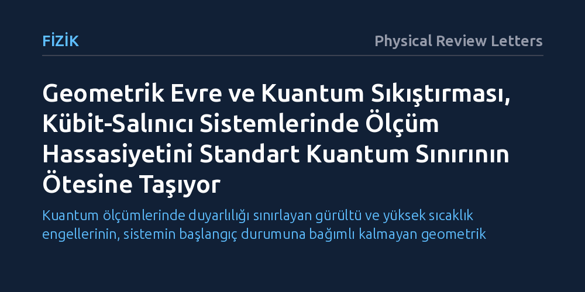

FIZIK · Physical Review Letters · 2026-10-25
Araştırmacılar, kübit-salınıcı sistemlerinde standart kuantum sınırını aşarak daha hassas ölçüm yapmayı sağlayacak yeni bir kuantum duyargalama protokolü geliştirdi. Faz uzayındaki geometrik evrenin sıkıştırma tekniğiyle büyütülmesi sayesinde, sistemin başlangıç durumundan ve gürültüden bağımsız olarak yüksek hassasiyete ulaşıldı.
Kuantum ölçümlerinde duyarlılığı sınırlayan gürültü ve yüksek sıcaklık engellerinin, sistemin başlangıç durumuna bağımlı kalmayan geometrik yöntemlerle aşılabileceğini gösteriyor.

Kuantum duyargalama teknolojileri; zayıf elektromanyetik alanları, yerçekimsel dalgalanmaları ve son derece küçük mekanik kuvvetleri ölçmede benzersiz bir potansiyel sunar. Ancak ölçüm sürecinde kuantum mekaniğinin doğasından kaynaklanan temel bir kısıtlama bulunur: Standart kuantum sınırı. Bu sınır, parçacıkların dalga yapısı ve Heisenberg belirsizlik ilkesi nedeniyle klasik yaklaşımlarla ulaşılabilecek en yüksek hassasiyet tavanını belirler.
Bu tavanı aşmak için geliştirilen mevcut protokoller genellikle sistemin mutlak sıfıra çok yakın soğutulmasını veya son derece kırılgan kuantum durumlarının korunmasını şart koşar. Pratik uygulamalarda ise ortam gürültüsü ve termal etkiler bu hassas durumları hızla bozar. Araştırmacılar, bu kırılganlığa teslim olmadan ve sistemin başlangıçtaki karmaşık durumuna bağımlı kalmadan standart sınırın ötesine geçmenin bir yolunu aradı.
Önerilen yöntemin merkezinde, iki enerji seviyesine sahip bir kuantum biti (kübit) ile sürekli salınım yapan bir kuantum rezonatörünün etkileşimi yer alıyor. Protokolde algılanmak istenen fiziksel sinyal, salınıcının faz uzayında kapattığı yörüngenin oluşturduğu 'geometrik evreye' kodlanıyor. Bu evre, salınıcının durum uzayında taradığı döngüsel alanın büyüklüğüyle doğrudan orantılı olarak ortaya çıkıyor.
Araştırmacılar, sinyalin gücünü artırmak için faz uzayındaki bu alanı kuantum sıkıştırması (squeezing) tekniğiyle genişletti. Sıkıştırma işlemi, salınıcının belirli bir değişkendeki belirsizliğini azaltarak taranan geometrik alanı büyütüyor ve ölçüm sinyalini belirginleştiriyor. Sistemin en ayırt edici tarafı, salınıcının başlangıçta yüksek sıcaklıkta termal bir halde bulunmasından ya da mantıksal hata düzeltme durumunda olmasından etkilenmemesidir.
Geliştirilen protokol, boylamsal bağlı kuantum sistemlerinde kuvvet algılama hassasiyetini standart kuantum sınırının ötesine taşıyabildiğini gösterdi. Bunun yanı sıra, süperiletken devre kuantum elektrodinamiği mimarilerinde sıkça başvurulan dispersif eşleşmelerde de yüksek hassasiyetli etkileşim ölçümleri ve kontrol darbelerinin hassas kalibrasyonu başarıyla modellendi.
Çalışmanın bulgularına göre yöntem, kübitlerde yaygın olarak görülen Markovyen kuantum gürültüsüne karşı kayda değer bir direnç sergiliyor. Çevresel etkileşimlerin yol açtığı sinyal bozulmalarına rağmen durumdan bağımsız yapısını koruyabilmesi, protokolün yeni nesil kuantum metrolojisi için pratik bir aday olmasını sağlıyor.
Elde edilen sonuçlar, kuantum algılayıcıların yalnızca kusursuz biçimde izole edilmiş laboratuvar ortamlarında değil, gürültülü ve termal dalgalanmalar içeren gerçekçi koşullarda da yüksek hassasiyetle çalışabileceğini gösteriyor. Hata düzeltme kodlarıyla korunan kuantum bilgisayar mimarilerinde ek bir hazırlık gerektirmeden kalibrasyon yapılabilmesi, sistem yönetimini kolaylaştırabilecek bir adımdır.
Yöntemin sunduğu bu avantajların pratik cihazlara aktarılması, laboratuvar ortamında faz uzayı sıkıştırmasının ne kadar kararlı uygulanabileceğine bağlı kalacaktır. Gelecekte yapılacak deneysel testler, bu geometrik yaklaşımın süperiletken devreler ve tuzaklanmış iyon platformlarındaki nihai performansını netleştirecektir.